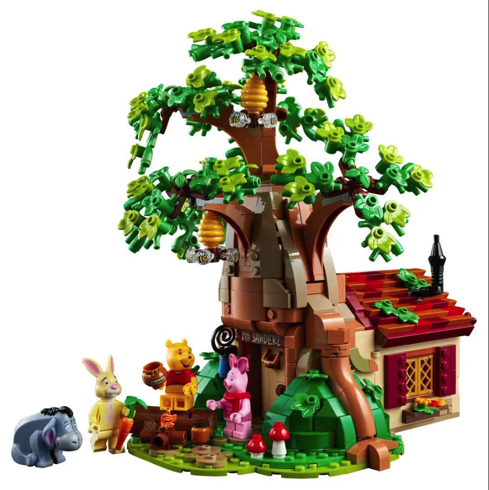
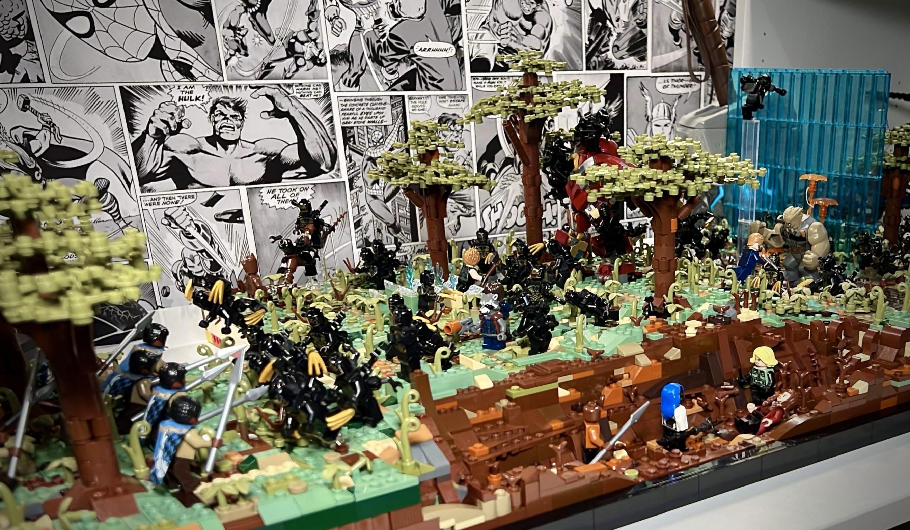
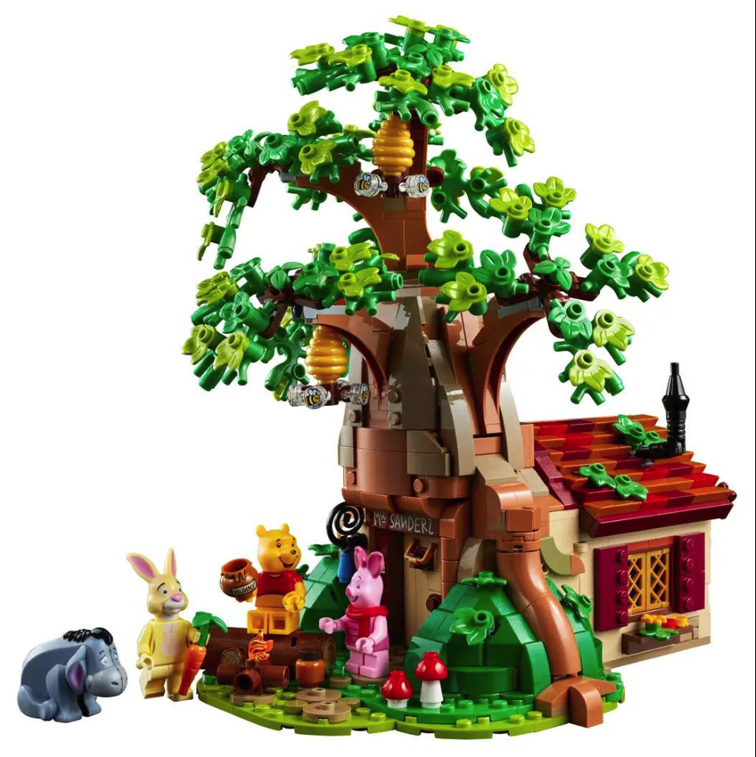
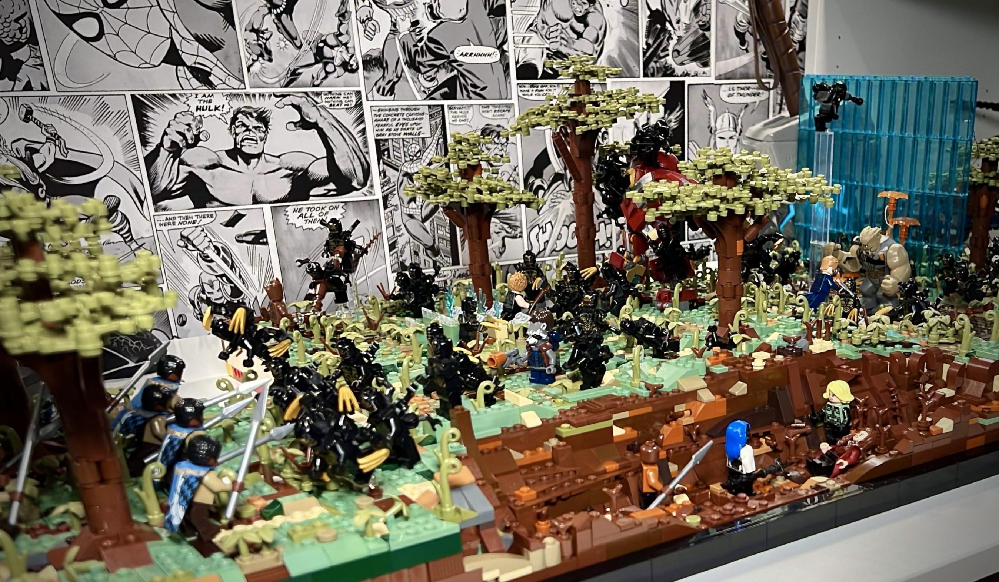

What's at the show?
From the Flying Saucer Café, Winnie The Pooh, Animations, Miniature builds, E.T., Christmas train to Great Ball Contraptions there will be a plethora of creative builds with a Christmas theme to view. We will also have a Lego and Duplo play area.
When?
Saturday the 2nd December.
Where?
Ely Library, 6 The Cloisters, Ely. CB7 4ZH.
Free Entry
Ely Brick Show Christmas Special is free to enter but if you would like to donate to our chosen charity (Centre 33) please click on the button below, or you can place your donation in our donation box at the show.
About our charity
Centre 33 supports young people up to the age of 25 with their mental health, caring responsibilities, housing, sexual health and more.
Any additional questions? Contact us through the email elybrickshow@btinternet.com.